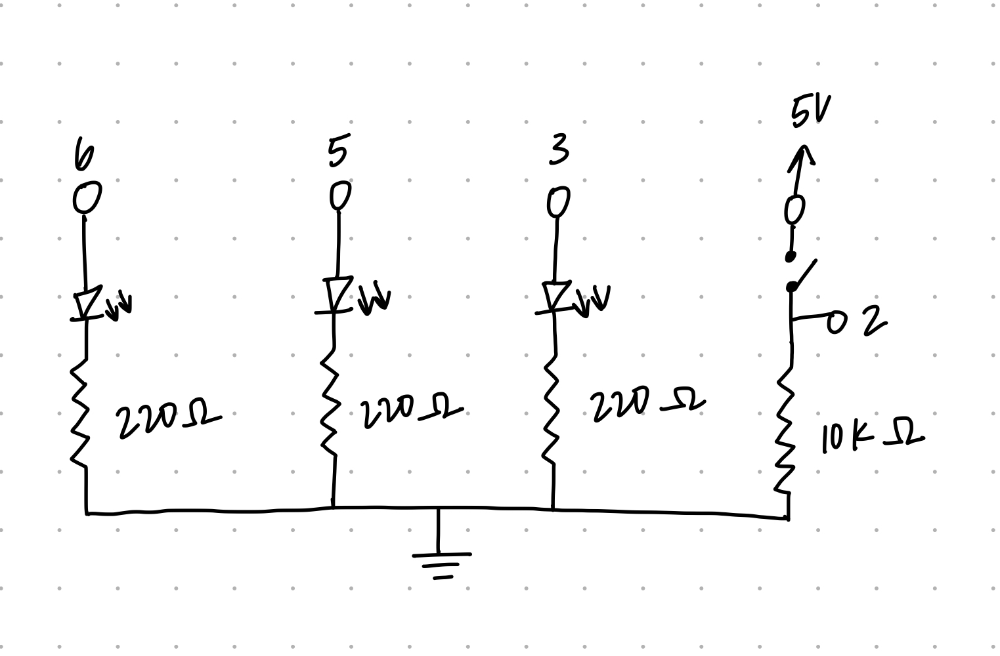
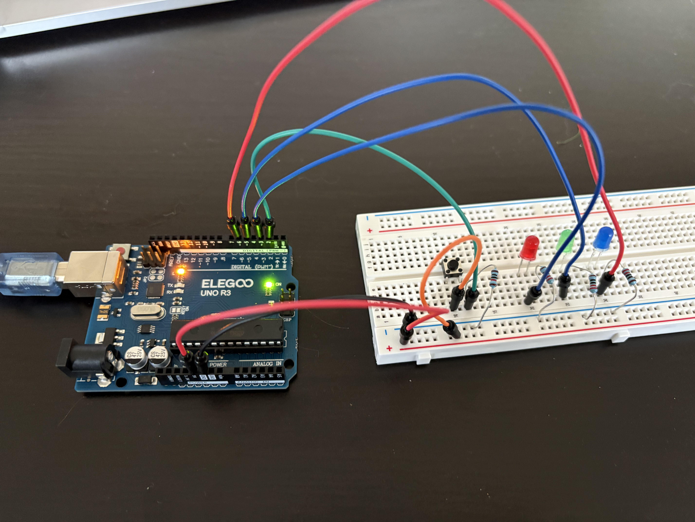
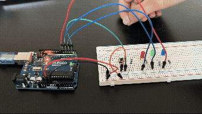
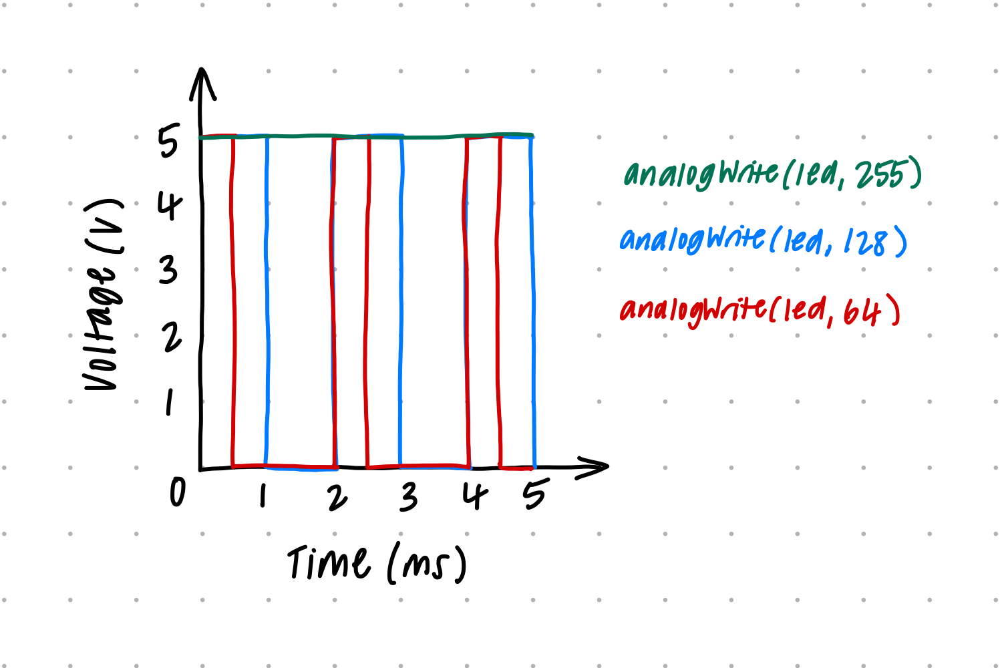

Here is all the documentation for assignment 2!

The circuit connects digital pin 2 to a tactile pushbutton with a 10kΩ pull-down resistor to GND. Digital pins 3, 5, and 6 connect to the anodes of Red, Green, and Blue LEDs, respectively. Each LED cathode connects to GND through a 220Ω current-limiting resistor.
To safely restrict current through the LEDs and protect the Arduino digital pins, resistor values were calculated using Ohm's Law (V = I * R):
Standard 220Ω resistors were chosen for all three LEDs (Red, Green, Blue). At 220Ω, the current per LED is:
I = 3.0V / 220Ω ≈ 13.6mA, which is well below the Arduino Uno's maximum rating of 40mA per I/O pin.
A 10kΩ resistor is used as a pull-down resistor between digital pin 2 and ground (GND):
I = 5V / 10,000Ω = 0.5mA (500μA), preventing a direct short circuit while minimizing power consumption.

Breadboard setup showing the tactile button connected to digital pin 2 with a 10kΩ pull-down resistor to GND. Red, Green, and Blue LEDs are connected to PWM digital pins 3, 5, and 6 with 220Ω current-limiting resistors connected to the GND rail.
// Define the digital pin connected to the pushbutton
// Define the digital pin connected to the pushbutton
const int buttonPin = 2;
// Define array holding PWM digital pins for the 3 LEDs
const int ledPins[] = {3, 5, 6};
// Define total number of LEDs in our array
const int numLeds = 3;
// Variable to store the current state of the pushbutton
int buttonState = 0;
void setup() {
// Set the pushbutton pin as an input to read its state
pinMode(buttonPin, INPUT);
// Use a for-loop to iterate through each LED pin in the array
for (int i = 0; i < numLeds; i++) {
// Configure each LED pin in the array as an output pin
pinMode(ledPins[i], OUTPUT);
}
}
void loop() {
// Read digital signal (HIGH or LOW) from pushbutton pin
buttonState = digitalRead(buttonPin);
// Check if the pushbutton is currently pressed (HIGH)
if (buttonState == HIGH) {
// Use a for-loop to cycle through fade brightness values (0 to 255)
for (int brightness = 0; brightness <= 255; brightness++) {
// Set brightness of LED 1 using analogWrite (PWM signal)
analogWrite(ledPins[0], brightness);
// Turn LED 2 fully on using digitalWrite
digitalWrite(ledPins[1], HIGH);
// Turn LED 3 fully on using digitalWrite
digitalWrite(ledPins[2], HIGH);
// Pause execution for 5 milliseconds to control fade speed
delay(5);
}
// Use a for-loop to cycle down fade brightness values (255 down to 0)
for (int brightness = 255; brightness >= 0; brightness--) {
// Decrease brightness of LED 1 using analogWrite
analogWrite(ledPins[0], brightness);
// Pause execution for 5 milliseconds to make dimming visible
delay(5);
}
} else {
// Use a for-loop to loop through all LED pins when button is open
for (int i = 0; i < numLeds; i++) {
// Turn off each LED pin using digitalWrite
digitalWrite(ledPins[i], LOW);
}
}
}
Demonstration of the interactive prototype: pressing the button turns on Green and Blue LEDs while smoothly fading the Red LED up and down using PWM. Releasing the button turns all LEDs off immediately.

Chart showing Voltage (0V to 5V) on the Y-axis over Time on the X-axis for analogWrite values 64 (25% duty cycle), 128 (50% duty cycle), and 255 (100% duty cycle / steady 5V).
* Red LED (Vf ≈ 2.0V): I1 = (5V - 2.0V) / 220Ω ≈ 13.6mA
* Green LED (Vf ≈ 3.0V): I2 = (5V - 3.0V) / 220Ω ≈ 9.1mA
* Blue LED (Vf ≈ 3.0V): I3 = (5V - 3.0V) / 220Ω ≈ 9.1mA
* Arduino Board Operating Current: ≈ 45mA
Total LED Current = 13.6mA + 9.1mA + 9.1mA = 31.8mA
Total Circuit Current = 31.8mA + 45mA = 76.8mA
The maximum output current limit per micro-controller pin on the Arduino Uno is 40mA, and the maximum overall micro-controller current is 200mA. At 31.8mA total across 3 pins, our circuit operates well below both limits.
Runtime = Battery Capacity (mAh) / Total Current Draw (mA)
Runtime = 1200 mAh / 76.8 mA ≈ 15.625 hours (15 hours and 37 minutes)
The voltage of 1.95V measured by the multimeter matches the theoretical value of 2.00V closely. The slight discrepancy (0.05V) can be attributed to standard tolerances related to the LED and multimeter.
I did not use AI tools to complete this assignment.